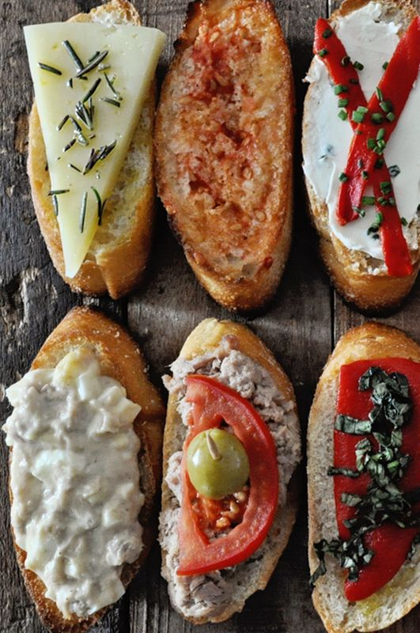
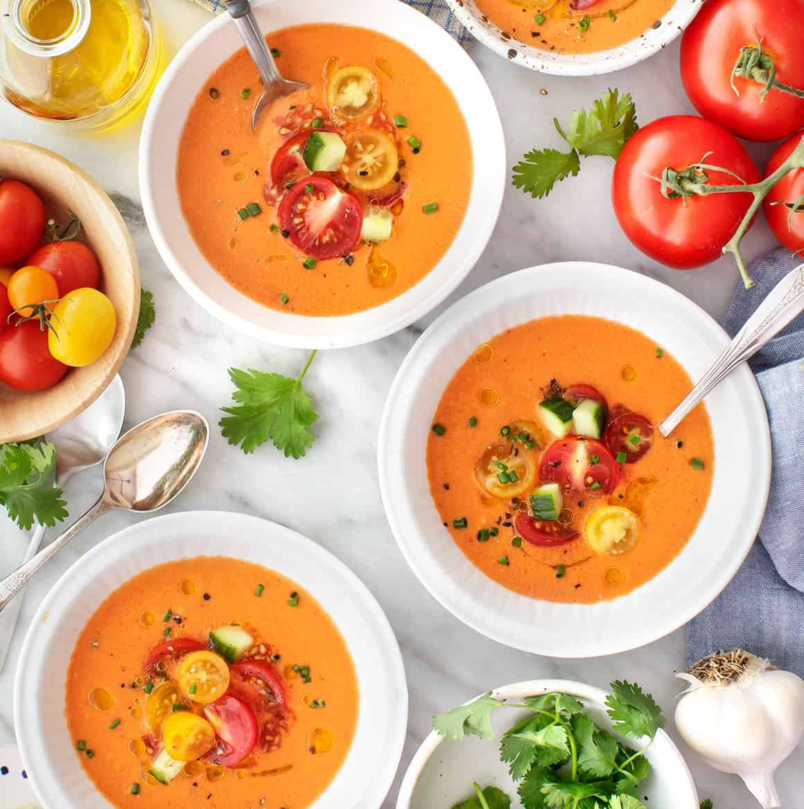
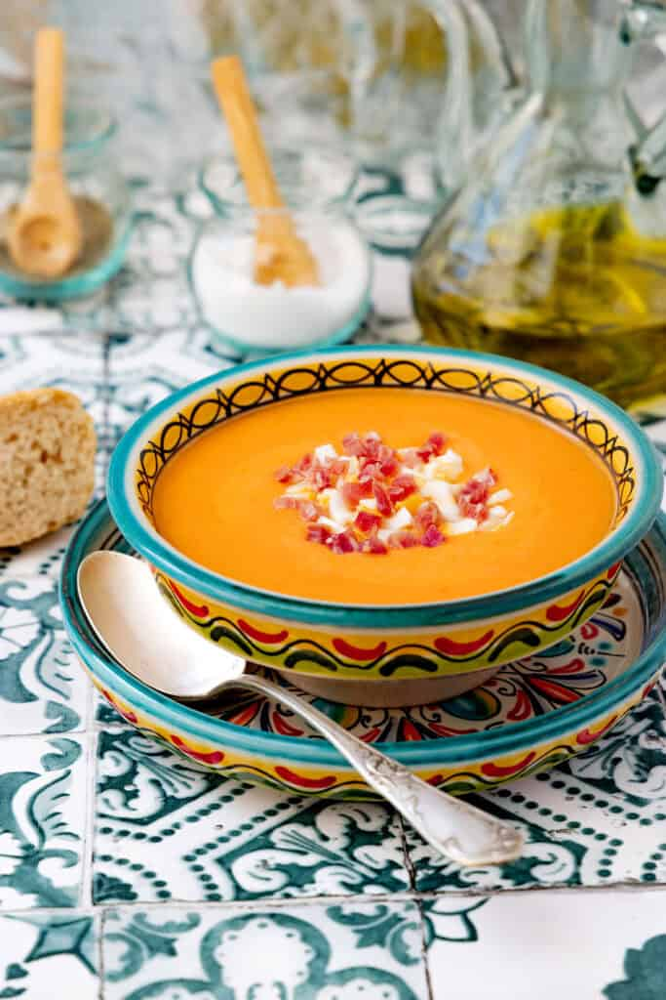
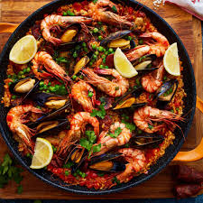
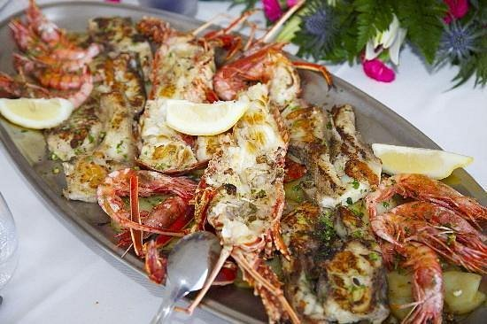
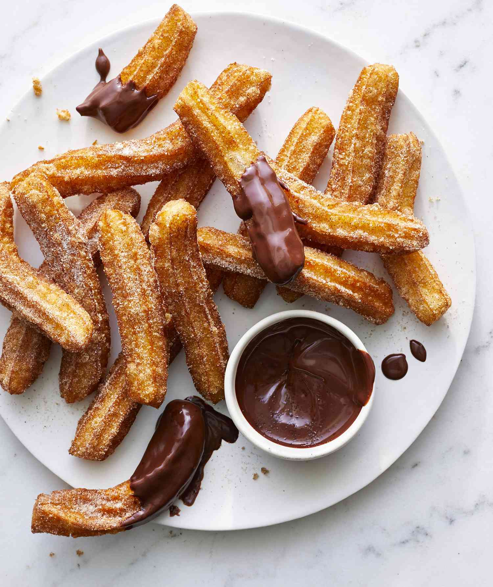
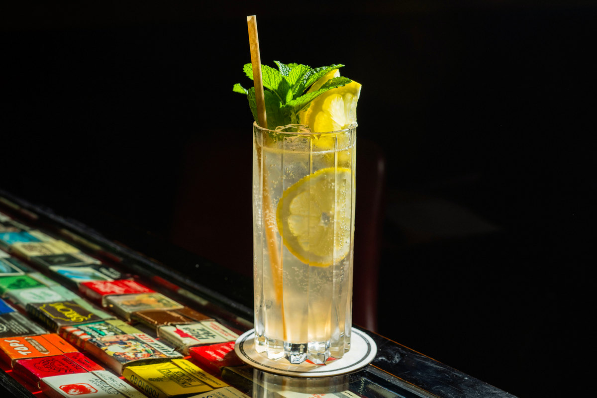
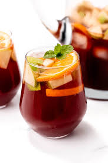

Andalusia · Sevilla · España
Cita Rasa
Andalusia
Dari mangkuk gazpacho dingin hingga piring paella mengepul — kuliner Sevilla adalah perpaduan sejarah, sinar matahari, dan jiwa yang tak tergantikan.
Warisan Kuliner · Sevilla · Andalusia

Tapas
Gigitan kecil penuh rasa dari jamón ibérico hingga patatas bravas.

Gazpacho
Sup tomat dingin khas Andalusia.

Salmorejo
Krim tomat padat dengan telur rebus dan jamón.

Paella de Mariscos
Nasi safron dengan udang, kerang dan cumi.

Pescaito Frito
Ikan kecil segar dari Sungai Guadalquivir yang digoreng garing dalam tepung ringan.

Churros con Chocolate
Adonan goreng renyah yang dinikmati bersama cokelat panas kental.

Rebujito
Campuran Manzanilla, soda lemon, es batu, dan daun mint yang menyegarkan.

Sangria
Minuman klasik Spanyol berbasis anggur merah yang dicampur buah-buahan segar.
Makanan Sevilla bukan sekadar sajian — ia adalah percakapan antara bumi Andalusia, laut Mediterania, dan ribuan tahun peradaban yang bercampur di satu piring.
Filosofi Kuliner Andalusia
Cara Menikmati
Kuliner Sevilla
-
01
Makan Siang Mulai Jam 2 Siang
Orang Spanyol makan siang antara pukul 14.00–16.00. Restoran terbaik baru ramai di jam ini, bukan di jam 12 seperti kebiasaan turis.
-
02
Tapas Bukan Sekadar Snack
Di Sevilla, memesan beberapa ronde tapas kecil sambil berpindah bar (tapeo) adalah tradisi sosial, bukan sekadar cara makan.
-
03
Minta "La Cuenta" dengan Percaya Diri
Tagihan tidak akan datang sendiri — ini tanda keramahan, bukan kelalaian. Minta dengan cara mengatakan "La cuenta, por favor."
-
04
Pairing Rebujito di Feria di Abril
Saat festival Feria de Abril berlangsung, minuman resmi-nya adalah Rebujito — campuran Manzanilla dan Seven-Up yang segar dan ringan.